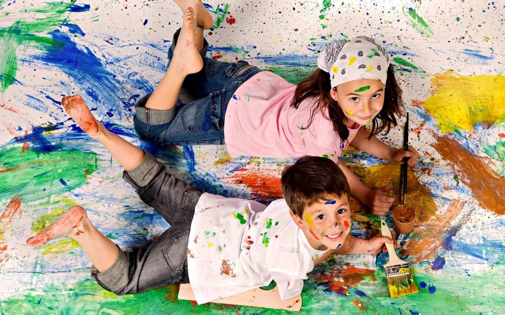

Төменде біздің сайттың соңғы мақалаларын оқи аласыз:
Ағаш ойып, тігін тігуді үйренеді
Мектеп тек білім берумен шектелмейді. Тәрбие, тәжірибе, болашаққа бағдар да
береді.
Оқу ордасында
жүріп теориялық білімнен бөлек, тамақ пісіру, тігін тігу, ағаштан бұйым жасау, құрақ құрау
сияқты өнер
түрлерін үйрену ғажап қой? Мұндай мүмкіндік әркімге беріле бермейді. Ал жақында екі
шеберхана қатар ашылған
Алматы қаласындағы №10 мектеп-интернаттың шәкірттері тігін тігіп, ағаш бұйымдарын жасауды
үйрене алады.
Толығырақ

Бала арман, MARVEL және Стэн Лиге хат
Кітаптан, газеттен, әлеуметтік желіден, теледидардан өзімізге таныс, жақын
нәрсені іздейміз.
Ертеректе мұндай туындыны табу қиын еді. Қазір барлық сала жылдам дамып жатыр. Кино,
мультфильм,
телебағдарламадан жанымызға жақын кейіпкерлерді кездестіруге болады. Сол кейіпкерлер кімнің
қиялынан туған?
Мұндай бейнені экранға шығарып жүрген кім? Жақында режиссер, анимация маманы Мейіржан
Сандыбаймен әңгімелескен
едік. Ол бізге «Balapan» арнасындағы анимация қалай жасалатынын айтып берді.
Толығырақ
Қазақша программалау мектебі
Қазір ІТ, программист деген сөздер бәрімізге таныс. Алайда бұл саланың ауқымы
өте кең екенін біле
бермейміз. Алғашында ІТ маманы не программист десе, бұзылған компьютер мен телефонды
жөндейтін адам
елестейтін. Кейінірек оның сайт, ойын жасай алатынын түсіндік. Оның қызметі мұнымен
шектелмейді екен. Жақында
Kaz Coder онлайн программалау мектебінің негізін салған 19 жастағы Дастан Тілеубекпен
әңгімелескен едік. ІТ
саласы бойынша тегін марафон өткізіп жүрген ол бізге көп тың мағлұмат берді. Болашақта ІТ
саласында білім
алып, жұмыс істегісі келетін оқырманға Дастанның ақпараты пайдалы болады деген ниетпен
жариялап отырмыз.
Толығырақ